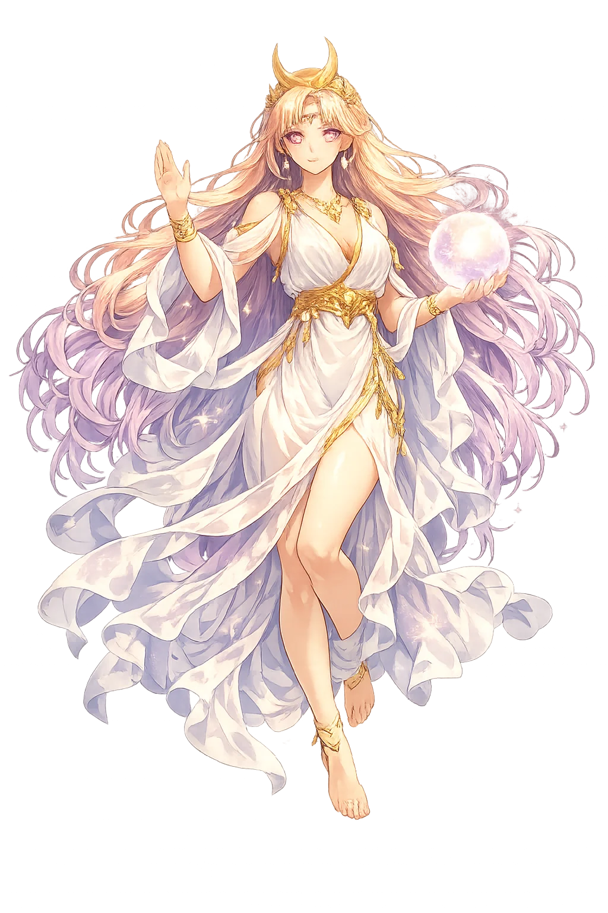

The Living Myth
The Divine Feminine Principle, She Who Is · The Receptacle of the Divine

Stories of Hē
Hē has no myth in the traditional sense. Its 'mythology' is the history of interpretation: how a tiny grammatical word became, for some philosophers, a divine name.
Plato calls the principle of becoming the hupodochē, the 'receptacle' (Timaeus 49a–51b): that in which things come to be and perish while it itself never alters — 'like a mother receiving seed.' The dialogue famously refuses to give it a stable name; it partakes of the intelligible 'in a most puzzling and difficult way,' being neither this nor that, yet all thises and thats appear in it. Aristotle reports the same pairing as Plato's own 'unwritten doctrines': the One and the Unlimited, the active and passive principles of all things (Metaphysics A 6, 987b). Later readers — Neoplatonists above all — identified this receptive principle with the feminine and, through the grammar of manifestation, with the word ἡ itself. The myth means that matter, whatever receives form, was philosophically gendered female from the very beginning of Western metaphysics — and the smallest word in Greek became its name.
In Neoplatonic and theurgical texts the masculine tò hén (Hén, the One) is paired with hē, the feminine principle of procession and manifestation — the dyad that follows unity and generates the multiplicity of the cosmos. The tradition read the pair out of Plato's own Parmenides, whose second hypothesis explores 'if the one is': the One-that-becomes-many. Iamblichus made the One and the dyad the first principles of number, and Proclus calls the dyad 'the cause of difference and the first multiplicity'; Damascius, last head of the Athenian school, named the dyad 'the Unlimited' itself, the first otherness from which all number and all form flow. The myth means the cosmos is born grammatically: unity speaks as masculine, manifestation as feminine — and the article 'she' becomes the name of everything the One is not.
The Pythagorean tradition, preserved in Nicomachus and Iamblichus (Theology of Arithmetic, on the dyad), gave the feminine number her most vivid character. The dyad is called audacity — daring, boldness, impulse, the boldness that separates from the One; it is also called matter and opinion, as against knowledge, and, in a phrase that fascinated and scandalized alike, 'the mother of the gods, but a virgin,' because it produces multiplicity while remaining in itself unchanged. Its traditional name, Duas, was paired with Monas exactly as Hē with Hén, and the same treatises praise the dyad as 'equal and unequal at once' — the first inequality, through which difference enters the world. The myth means the feminine principle was never merely passive in this tradition: she is the boldness of manifestation itself — the first risk the cosmos ever takes.
In ordinary Greek, ἡ is simply 'the' before feminine nouns — among the commonest syllables in the language, never stressed, never capitalized in a manuscript. Its elevation to a theological name is linguistic mysticism in its purest form: the hypothesis that the deep structures of grammar map the deep structures of reality. The same instinct runs through late-antique allegory, from Stoic etymology to Neoplatonic exegesis of Homer, and reappears centuries later in Kabbalistic letter-meditation. Hē is thus a goddess born from philology rather than cult — a flagship in a lexicon of names that never had an altar. The myth asks what it means to deify a function: to discover, in the grammar of pointing — 'she, the one I mean' — the shadow of a cosmic principle.
Receptivity, Manifestation, She Who Is
Hē is the Ancient Greek feminine article, later reinterpreted by philosophers as a name for the feminine principle of being. It is the grammatical 'she' that becomes, in Neoplatonic and esoteric thought, the counterpart to the One.
The definite article 'she,' personified by later mystical thought as feminine being.
In Platonic interpretation, Hē is the hupodochē, the receiving matter in which forms appear.
If τὸ ἕν (Hén) is the One, ἡ (Hē) is the manifested other, the dyad that follows unity.
A case where grammar becomes theology: the smallest word elevated to cosmic status.
From the original script to the living URL
ἡ
The name in its original Greek form. Hē (ἡ) is attested in the source tradition — “Feminine nominative singular article in Ancient Greek; in Orphic and Neoplatonic thought, the receptacle of divine overflow and counterpart to τὸ ἕν (Hén).”. Its long vowels carry the full phonetic and orthographic weight of the source tradition.
he
Reduced to plain he, the name loses everything that made it specific: long vowels. What remains is an ASCII string that machines can parse but that no longer speaks with its original voice.
Hē
The Unicode restoration recovers what ASCII flattened. Hē restores long vowels, returning the name to its original written dignity. The domain encodes to Punycode, but the browser displays the truth.
Hē.com → xn--h-pia.com
The non-ASCII characters in Hē are encoded while the ASCII remains visible. To the DNS, it is Punycode. To humanity, it is Hē.
Owned, ideal, and ASCII forms of Hē
Hē
Restores ἡ. The live temple domain — hē.com.
he
Flattens ἡ. The plain ASCII fallback — what DNS and legacy systems see.
How Hē was spoken
How Hē is preserved in writing
A bespoke provenance study for Hē is being prepared by the PUNICODEX scholarly team.
Contribute scholarly provenance →Hē asks what it means to be named by a function. She is not a character with myths but a grammatical marker that philosophers adored. Is this diminishment or elevation? The question is her theology.
Enter Extended Lore